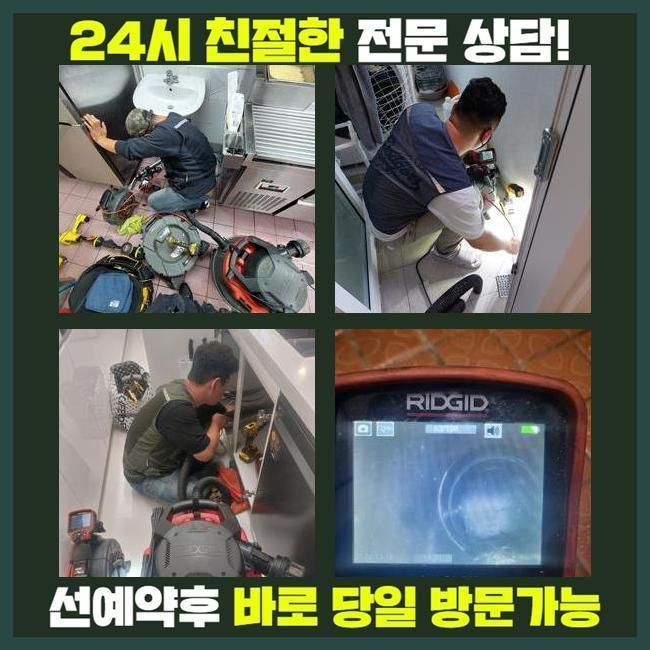
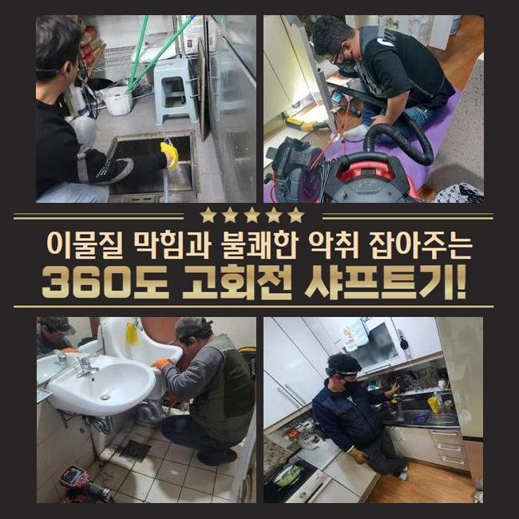
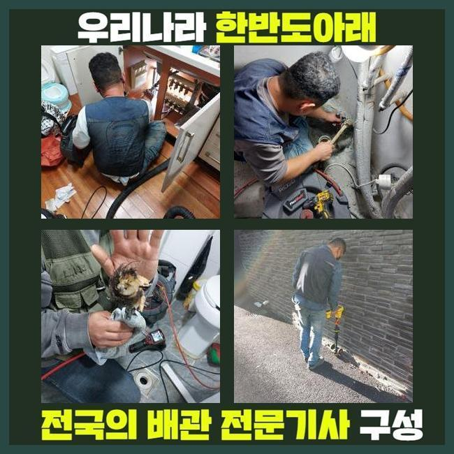
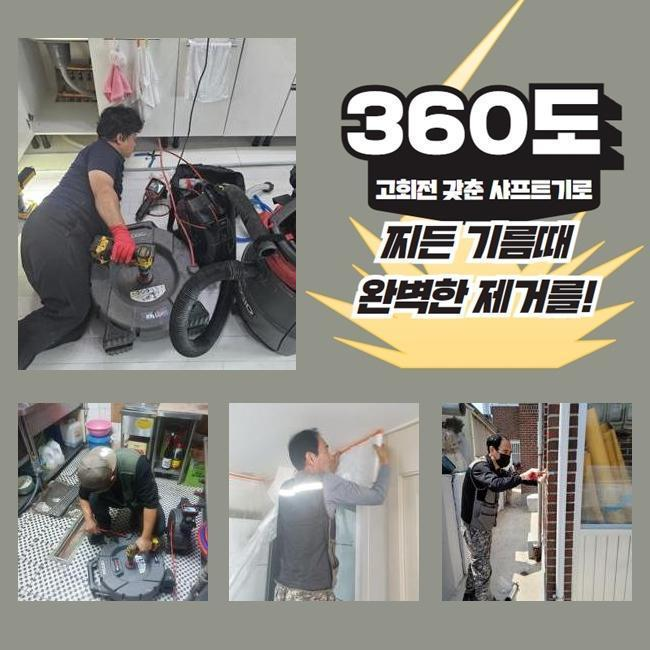
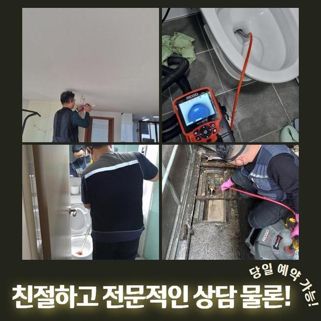
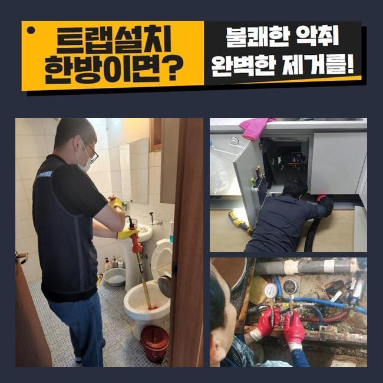

🏠 동대문 제기동화장실하수구뚫음 용신동 하수구청소 설비공사
용인 하수구막힘 전문 시공 후기

📋 작업 개요
- 위치: 용인
- 서비스 유형: 하수구막힘, 배관막힘, 뚫는업체, 배관청소, 설비공사
- 작업 일시: 2025. 1. 3. 15:24
- 업체명: 하수구수사대 (010-5615-2118)
🔍 문제 상황
동대문 제기동화장실하수구뚫음 용신동 하수구청소 설비공사
며칠전 고객님 댁에 내방드려 외부에 존재하는 하수도를 뚫었는데요
전문적인 기계들을 써서 확실히 처리해드렸어요
물들이 안내려가는 트러블이 야기된것은 열흘정도라고 하셨는데요
관로들은 통수과정에서 하수를 따라 잔여물질들이 배출되는데 내부에서부터 조금씩 누적되면서 관로들이 막히게됩니다
이물의 퇴적량과 크기마저 크다면 심해지게될텐데요
이물의 형태에 따라 수도에 녹게되는건 한계들이 있어서입니다
이렇게 통수불능의 증세들이 나타나게되면 보통의 방법들로 개선들에 다가서지 못하는 사례들이 많죠
의뢰자가 혼자서 평상시에 이용해보는 방법은 클리너제품이나 식초와 같은것을 부으시는 것일텐데요
증상들이 나타나고 기간들이 많이 안지났을때 효과를 볼 수 있는 방법이겠지만 외부라면 이렇다할 해결책이 되지 못해요
밖에서 증상이 보이면 스스로 시정해보는것이 어려우므로 전문가들의 도움들을 꾀하는게 좋은데요

🔎 원인 분석
💡 전문가 진단: 정밀 진단 장비를 사용하여 슬러지의 고착 여부를 판명하고 타격/세척 작업을 실시했습니다.
전문진들의 해결책으로 해당 장소에서 어디부터 정체된건지 근원적인 까닭들을 파악하는것은 기본이고 염기성용액들을 쓰는 방식과달리 뒤탈없이 이물을 청소해 오랫동안 컨디션에 있어서 관리하도록 하고있어요
이번 물들이 안내려가는 또한 저희전문가들은 적합한 장비들을 활용하여 빈틈없이 잔해까지 제거시키고 심부까지 배수가 가능하도록 만들었습니다
살핀 결과로 바깥에 존재하는 관로들에서 심각한 트러블이 존재했고 시정해보는것이 불가능해 해결을 의뢰하셨어요
저희들은 의뢰인의 일정이 가능하다라면 바로 내방하여 그 날에 일련의 과정들을 들어갑니다
의뢰를 받았더니 마당에서 문제가 생긴것으로 보였습니다
단독주택 바깥에 위치한 하수구들이 막힌 탓에 강수 상황 시 고여버리는 상황으로 파악되었죠
특히 우천상황에서는 쓰레기들이나 낙엽 등 다양한 잔해가 빠지게됩니다
물청소 등을 할때 불현듯 배수관으로 천천히 빠지는 상황들이 많아졌다고 합니다
처음엔 고객은 알아서 괜찮아 지겠지 하시고는 조치들을 미룬 상태라고 하셨어요
그런데 해결이 늦었던 까닭인지 갑작스럽게 정지된 상태로 그대로였다고 합니다
이후에 며칠의 답답하게 배수되는걸 인지하고서 얼른 시정해야겠다며 전화하신거였는데요

🔧 작업 과정
마당이 단독으로 있어서 이웃에게 피해들을 전가시키진않겠으나 자가적으로 관리목적의 조치들이 진행되야하는 지점입니다
즉각적인 내방이 실시되는 곳들이 소수라 걱정들이 많았는데 저희업체는 바로 가능한 까닭에 곧장 호출을 하신것이였죠
저희들은 시기에 상관없이 휴무에도 작업해드리고 빨간날이라도 배관 관련 작업들을 하므로 문의 시 달려가 시공에 착수했습니다
배수관은 좁기에 가시적으로 주시하기에는 한계들이 있습니다
각 관로에 내시경장비를 삽입해 심층부 부근 포인트에 잔해물이 어떤 양상으로 존재하는지 확인합니다
내시경으로 침전된 잔해들을 어떤 방식으로 제거시켜야하는지 정해진다면 실용적인 방법을 선정합니다
먼저 샤프트도구를 이용하고 사이즈가 커지는 부분은 고수압의 기계들을 쓰기로 결정했습니다
샤프트로 말씀드리면 몸체와 연결된 선에 사슬모양의 노커부품이 장착되어있는데 이 노커부속품이 벽부분에 자리한 고착물을 제거해주는 전문기기입니다
상황에 알맞는 장비들을 통해서 확실히 문제들을 시정했습니다
작업시점에 만일 뚫어내지못하면 비용청구는 없다고 안내해요
저희들은 애초에 해당 장소에 내방하는 경우 출장비들을 받는 일 없이 찾아뵙기에 조금이나마 마음이 편하고 작업완료가 안되면 금액들은 발생되지 않으므로 편히 의뢰해보세요!
작업마무리 과정에서 이렇다 할 성과없이 철수하여 출장금액들을 받는 절차는 절대 발생치않는다 보증합니다
방문드린 곳은 외부에 존재하는 현장으로서 자갈 등도 흘러들어갔었고 누적된 기름성분과 엉키게되며 끈적한 상태와 더불어 돌과 같이 굳어졌습니다
딱딱하게 뭉쳐져서 중심구간에서부터 배수공간들을 내주었죠
흡착이 많이 진행된 터라 간소하게 해결되는것은 아니였는데 심층부까지 청소시켜야 했으므로 집수시설부터 고압수청소 기계를 꺼내야하는 현상이었습니다
고수압의 기계들을 통해서 안정적으로 수습이 이뤄져야했던 현상이었습니다
심층부를 확인해가며 지속적으로 작업을 이어갔지만 하수가 원활히 빠지는 상황들이 아니었습니다
그 까닭으로는 흙들과 함께 기름때들이 구간별로 넓은 범위에 누적되어 고착된 형상을 하고있었어요


✅ 작업 완료
샤프트도구가 닿을 수 없는 포인트로 고수압방식이 동반되야했답니다
이후에 고압수청소로 고착물들을 제거시키며 연결라인에 흡착된 이물들을 작게 만들어 청소해주었습니다
안정적으로 제거시키니 점진적으로 협소했던 배관으로 배수과정이 이루어지게 되었고 안쪽과 이어진 지점도 통수들이 가능했습니다
해당 내용들을 의뢰인에게 안내하고 모든 작업은 종료되었죠
동일한 문제들이 야기될 수 없도록 사용하실 때 꾸준히 관리해보시고 만에하나 1년내에 반복해서 나타날 경우 저희들이 사후관리를 실시하고 있으니 걱정할 일 없으십니다!



⚠️ 하수구 배관 막힘 예방 및 관리 가이드
- ✅ 머리카락, 비닐, 물티슈 등 물에 분해되지 않는 이물질은 하수구 유입을 절대 금지해 주세요.
- ✅ 하수구 거름망을 씌우고 모여진 이물질은 주기적으로 쓰레기통에 바로 비워주셔야 합니다.
- ✅ 배관 노후가 심할 경우 이물질이 더 쉽게 걸리므로 주기적인 배관 세척(고압세척 등)을 권장합니다.
- ✅ 작업 후 1년 이내 재발 시 하수구수사대에서 무상 A/S 보증 서비스를 제공합니다.
💡 핵심 정리
- 확실한 장비 작업(내시경 점검 및 샤프트 스케일링)으로 원인을 뿌리 뽑습니다.
- 작업 후 1년 이내에 동일한 부위 재발 시 100% 무상 A/S 서비스를 보장합니다.
- 서울 · 경기 · 인천 전 지역에 24시간 언제든 긴급 출동할 수 있도록 항시 대기 중입니다.
❓ 자주 묻는 질문 (FAQ)
🚨 용인 하수구막힘 문제로 고민이신가요?
정확한 원인 진단과 확실한 시공으로 재발 없는 해결을 약속드립니다.
24시간 긴급 출동 | 서울 · 경기 · 인천 전지역 | 1년 내 재발 시 무상 A/S